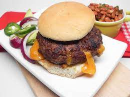

Cheesy Taco Burger

Ingredients
- 1 pound ground beef
- 1 (1 ounce) package taco seasoning
- 3 thick slices Cheddar cheese
- 3 hamburger buns, split
Directions
- Mix ground beef and taco seasoning together in a bowl. Set in the refrigerator for 30 minutes to let taco mix infuse into the beef.
- Preheat an outdoor grill for medium heat and lightly oil the grate.
- Remove meat from the refrigerator and make 6 very thin patties. Place a slice of Cheddar cheese into the center of 3 patties. Place the remaining patties on top of the cheese patties and seal together by pinching the ends.
- Cook on the preheated grill for 6 to 7 minutes. Flip and continue cooking until no longer pink, 6 to 7 minutes more. Place on hamburger buns.